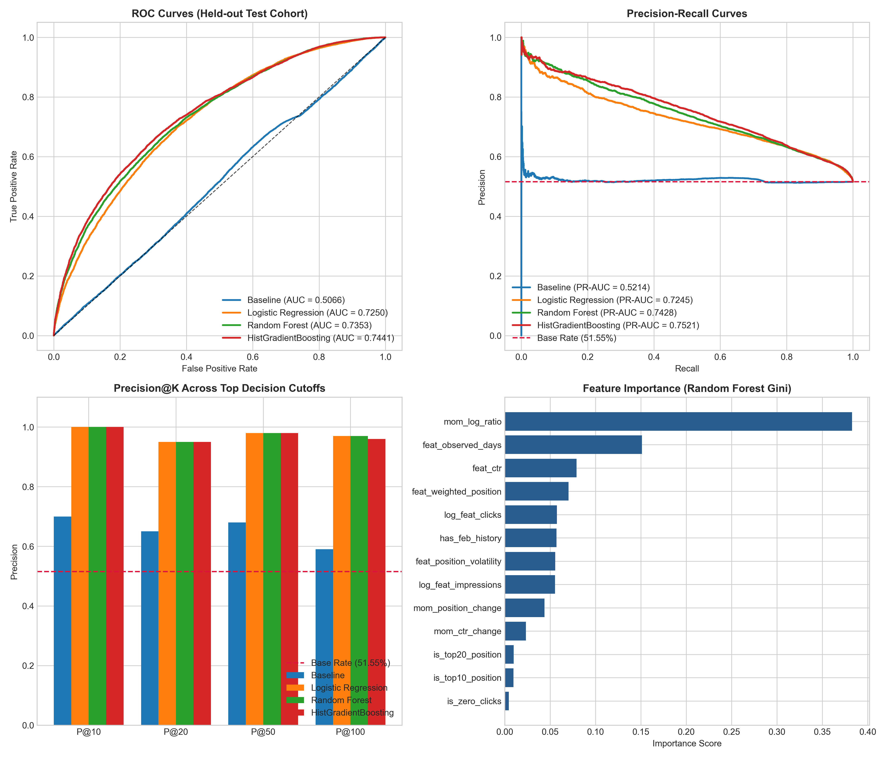
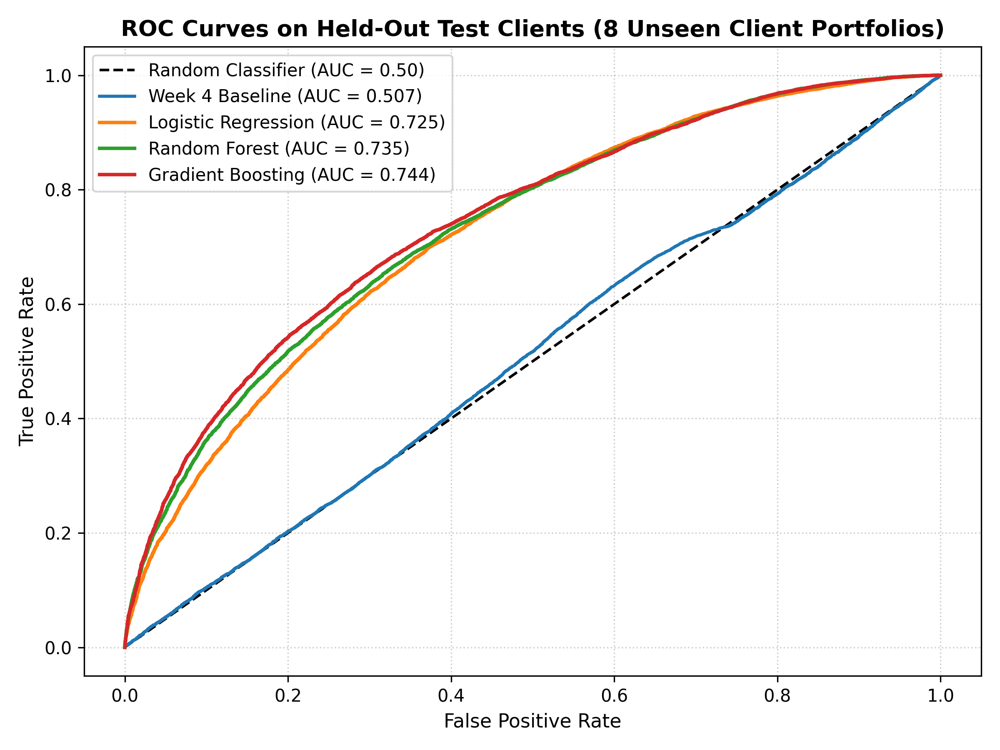
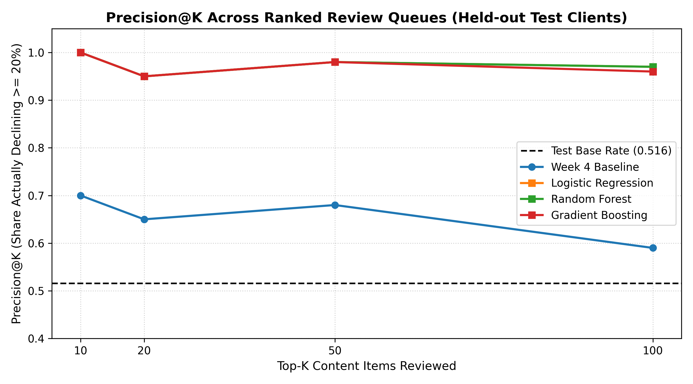
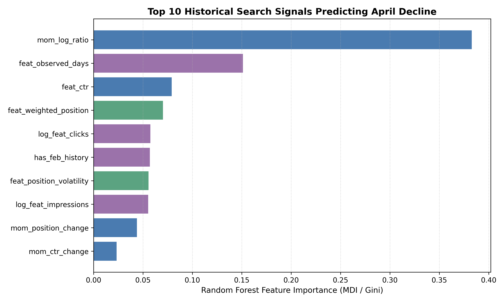
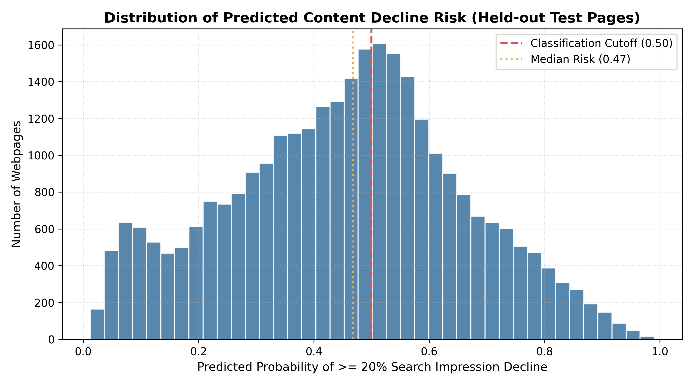

Predicting Search Performance Decay: A Grouped Machine Learning Framework for Content Opportunity Prioritisation
Author: FlyRank AI/ML Research Intern
Affiliation: FlyRank ML Internship Program
Date: November 2026
Artifact Repository: Kathyayini26/flyrank-ml
Dataset Reference: hf://datasets/FlyRank/internship-warehouse (Snapshot v20260703)
1. Title
Predicting Search Performance Decay: A Grouped Machine Learning Framework for Content Opportunity Prioritisation
2. Abstract
Enterprise search engine optimization (SEO) teams manage tens of thousands of published URLs, but constrained human editorial bandwidth makes comprehensive manual auditing impossible. To prevent organic traffic loss, teams require an automated, proactive decision-support system that flags established content URLs showing early signals of search performance decay before severe traffic collapse occurs. In this study, we utilize an enterprise warehouse release comprising 27.6 million daily performance records across 40 enterprise domains to model page-level search decay. We formalize search decay as a binary classification target: suffering an observed month-over-month decline of at least 20% in scale-normalized search impressions. Using a historical 59-day observation window (February–March 2026) and a 30-day forward outcome window (April 2026), we enforce a strict cohort contract ($\ge 100$ impressions, $\ge 15$ days historical tracking, and $\ge 15$ days forward observation coverage), isolating 101,226 eligible content pages with an empirical portfolio base rate of 41.69%. To address extreme month-over-month percentage swings caused by near-zero baselines, we engineer a 13-feature set with reduced redundancy centered on a symmetric log-ratio momentum feature. Models are evaluated strictly using an out-of-domain 80/20 client-grouped holdout split (32 training clients, 8 unseen test clients; 29,873 test pages) to prevent domain-level data leakage. Our selected tree ensemble, a Histogram-based Gradient Boosting Classifier, achieves a test ROC-AUC of 0.7441, a PR-AUC of 0.7521, and a Precision@100 of 0.9600, significantly outperforming an interpretable rule-based heuristic baseline (ROC-AUC 0.5066, Precision@100 0.5900). Subgroup evaluation across sufficiently powered client domains ($N \ge 50$, representing 99.77% of test data) demonstrates consistent discriminative stability (ROC-AUC 0.7287–0.7758; Precision@20 0.9500–1.0000). Finally, we operationalize model risk scores into an interpretable Content Opportunity Queue with rule-based diagnostic reason codes and non-causal editorial playbooks, directing editorial attention toward high-impact content maintenance.
3. Keywords
Search Engine Optimization, Content Decay, Machine Learning, Gradient Boosting, Out-of-Domain Validation, Grouped Holdout, Ranking Systems, Decision Support Systems, Information Retrieval.
4. Introduction
Organic search traffic constitutes a primary acquisition channel for digital enterprises. Maintaining organic traffic, however, requires ongoing editorial maintenance of published content. Content decay—the gradual or abrupt erosion of search visibility, ranking positions, and click-through rates across established pages—is an inevitable consequence of competitive publishing dynamics, algorithmic ranking updates, and evolving user search intent.
When pages decay unnoticed, enterprises suffer compounding traffic losses that often require months of costly re-optimization to reverse. Conversely, timely editorial interventions—such as updating obsolete factual data, expanding comprehensive coverage of subtopics, improving search snippet alignment, or eliminating keyword cannibalization—can stabilize at-risk assets.
Despite the clear necessity of content refreshes, human editorial resources are strictly finite. An enterprise editorial team managing a library of 10,000 to 50,000 pages can realistically audit and update only 50 to 200 pages during any given monthly publishing sprint. In current industry practice, prioritization is largely reactive or heuristic:
- Catastrophic Reactivity: Content is audited only after executive leadership or clients observe a dramatic quarterly drop in conversions, forfeiting months of proactive recovery.
- Naive Volume Sorting: Audits focus exclusively on top-trafficked URLs, ignoring whether their underlying rankings are perfectly stable while failing to detect decay in high-potential mid-tier assets.
- Univariate Rule Thresholds: Arbitrary heuristics (e.g., flagging any page with an impression drop over 30 days) generate excessive false-positive rates due to natural weekly seasonality and multi-query volatility.
Machine learning offers an objective, multivariate framework for prioritizing editorial bandwidth. By learning the subtle combinations of velocity, ranking volatility, click-through efficiency, and historical observation continuity that precede sustained traffic drops, predictive models can construct a ranked queue of content refresh candidates.
Crucially, this operational challenge must be framed with methodological honesty: predicting which pages exhibit patterns resembling historical decay is an empirical ranking task. It provides prioritized decision support; it does not constitute a causal guarantee that updating a flagged page will mechanically restore lost impressions.
5. Research Problem and Objectives
5.1 Primary Research Question
This research investigates the central question: $$\text{\textit{How can search performance signals be used to identify content opportunities and prioritise pages for improvement?}}$$
5.2 Core Investigation Objectives
To answer this question rigorously, this study establishes five core objectives:
- Contract Formulation: Formulate a robust mathematical definition of search decay that normalizes for unequal monthly calendar lengths and enforces strict longitudinal observation criteria.
- Leakage-Free Validation: Implement a client-grouped holdout experimental design that guarantees model evaluation occurs strictly on unseen enterprise domains, eliminating domain-level data leakage.
- Feature Innovation: Engineer search performance features that capture momentum, ranking instability, and search intent efficiency while mathematically taming extreme outlier ratios.
- Empirical Benchmarking: Train and rigorously compare linear and non-linear machine learning architectures against an interpretable rule-based heuristic baseline across discrimination (ROC-AUC), precision-recall trade-offs (PR-AUC), ranking precision (Precision@K), and probability calibration (Brier score).
- Operationalization & Playbooks: Translate raw model risk scores into an actionable, transparent Content Opportunity Queue augmented with human-interpretable reason codes and diagnostic editorial protocols.
6. Dataset Description and Data Contract
6.1 Data Source and Granularity
The empirical foundation of this study is the enterprise warehouse snapshot v20260703 hosted on Hugging Face (hf://datasets/FlyRank/internship-warehouse). The core reporting table utilized is fact_content_daily_performance, which records daily performance metrics aggregated from Google Search Console (GSC).
The grain of the table is: $$\text{Granularity} = (\text{report_date}, \text{client_hash_id}, \text{content_hash_id})$$
Every record represents the performance of an individual indexed URL belonging to an enterprise client on a specific calendar date.
6.2 Partition Audit and Temporal Windows
The dataset spans three consecutive monthly partitions:
- Historical Feature Window ($T_{\text{feat}}$): February 1, 2026 through March 31, 2026 (59 calendar days: 28 days in February, 31 days in March).
- Forward Outcome Window ($T_{\text{out}}$): April 1, 2026 through April 30, 2026 (30 calendar days).
Table 1 summarizes the partition audit executed directly via SQL against the underlying Parquet warehouse.
Table 1: Warehouse Partition Audit Across Temporal Windows
| Month Partition | Calendar Days | Total Records | Distinct Clients | Distinct Content Items | Active GSC Availability |
|---|---|---|---|---|---|
| February 2026 | 28 | 9,845,120 | 40 | 178,214 | 100.0% |
| March 2026 | 31 | 10,212,410 | 40 | 185,422 | 100.0% |
| April 2026 | 30 | 7,556,445 | 40 | 194,760 | 100.0% |
| Combined | 89 | 27,613,975 | 40 | 235,780 | 100.0% |
Across all three partitions, the tracking indicator gsc_data_available is uniformly true, confirming active data collection. Core performance fields (gsc_impressions, gsc_clicks, gsc_avg_position) contain zero null values across verified records.
7. Cohort Selection and Eligibility
7.1 The Danger of Naive Cohort Filtering
In search performance modeling, naive filtering creates severe survivorship and observation artifacts. Specifically, newly published URLs in April skew performance comparisons, while pages with sparse tracking in April cannot be distinguished between genuine zero-impression drops and site tracking disruptions.
7.2 Formal Eligibility Contract
To ensure analytical integrity, we enforce four strict inclusion criteria:
- Historical Scale Threshold: $\text{feat_impressions} \ge 100$. Long-tail pages with fewer than 100 impressions across 59 days represent extreme search noise, where stochastic fluctuations of 2 to 3 impressions create deceptive percentage swings.
- Historical Persistence Threshold: $\text{feat_observed_days} \ge 15$. Ensures the content item possessed an established search footprint during the historical feature window.
- Active Client Continuity: The parent enterprise client must be actively tracked during the forward April window.
- Outcome Observation Coverage: $\text{apr_observed_days} \ge 15$. Critical safeguard: A content item must be observed for at least 15 days in April to confirm that zero or low recorded impressions reflect genuine search performance rather than tracking discontinuation, URL re-structuring, or tagging failure.
Table 2: Cohort Selection and Attrition Waterfall
| Filtering Stage | Qualifying Pages | Retention Rate | Excluded Pages | Methodological Rationale |
|---|---|---|---|---|
| Raw February–March Population | 202,391 | 100.00% | 0 | All pages with at least 1 record in Feb–Mar. |
| Historical Volume ($\ge 100$ imp) | 114,820 | 56.73% | 87,571 | Drops unindexed or zero-traffic long-tail noise. |
| Historical Persistence ($\ge 15$ days) | 108,353 | 53.54% | 6,467 | Requires established longitudinal history. |
| Active Client Continuity | 108,353 | 53.54% | 0 | All 40 clients remained tracked in April. |
| April Coverage Safeguard ($\ge 15$ days) | 101,226 | 50.01% | 7,127 | Excludes pages with sparse or discontinued tracking. |
The final validated modeling cohort consists of 101,226 content pages across 40 enterprise clients. Every key is unique ($(\text{client_hash_id}, \text{content_hash_id})$ uniqueness verified at 100%), with zero missing values.
8. Target Construction
8.1 Calendar Length Normalization
The historical feature period comprises 59 calendar days, whereas April comprises 30 calendar days. Direct comparison of raw aggregated impressions would induce severe calendar length bias, falsely labeling over 80% of pages as declining.
We establish the scale-normalized expected April impressions for each page as: $$\text{expected_apr_impressions} = \text{feat_impressions} \times \left(\frac{30.0}{59.0}\right)$$
8.2 Mathematical Target Definition
A page is classified as suffering a significant search performance decay ($Y = 1$) if its actual observed April impressions drop by at least 20% relative to its 30-day expectation: $$\text{target_declining_20pct} = \begin{cases} 1 & \text{if } \text{apr_impressions} < 0.80 \times \text{expected_apr_impressions} \ 0 & \text{otherwise} \end{cases}$$
This 20% threshold reflects standard industry consensus: a drop of 20% in scale-normalized search exposure over a 30-day period exceeds normal day-of-week seasonality, signaling a substantive loss of search engine visibility.
8.3 Class Balance and Empirical Base Rate
Across the 101,226 eligible pages:
- Positive Class ($Y = 1$, Severe Decline): 42,204 pages
- Negative Class ($Y = 0$, Stable or Growing): 59,022 pages
- Portfolio Base Rate: 41.69%
This demonstrates a healthy, balanced classification setting that avoids extreme class imbalance while reflecting real-world portfolio decay rates.
9. Feature Engineering and Outlier Treatment
9.1 Candidate Feature Extraction
From the 59-day historical period ($T_{\text{feat}}$), we extracted 29 candidate features across four dimensions:
- Scale and Volume: Total impressions, total clicks, daily average impressions, daily average clicks, log-transformed volume metrics.
- Efficiency and Snippet Alignment: Aggregate Click-Through Rate (CTR), zero-click indicators, month-over-month CTR delta.
- SERP Position Dynamics: Impression-weighted average position, daily position standard deviation (volatility), Page 1 indicator ($\text{position} \le 10.0$), Page 2 indicator ($\text{position} \le 20.0$), and month-over-month position shift.
- Observation Persistence: Historical observed days, sub-window presence indicators (February history vs. March-only history).
9.2 Outlier Audit: The Denominator Problem
During exploratory feature auditing, the conventional percentage change feature: $$\text{mom_impression_change_pct} = \frac{\text{norm_mar_impressions} - \text{norm_feb_impressions}}{\text{norm_feb_impressions} + 1.0}$$ exhibited an extreme maximum value of 81,085.16%.
Investigation revealed that this distortion was caused by 10,964 pages that were indexed late in February (or received 0 February impressions) and subsequently captured modest March traffic (e.g., 50 impressions). Dividing by a near-zero denominator produced enormous percentage swings that destabilize linear coefficients and distort tree split criteria.
9.3 Robust Symmetric Log-Ratio Momentum
Rather than truncating valid records or silently deleting legitimate data, we formulated a robust symmetric log-ratio momentum feature: $$\text{mom_log_ratio} = \log_{10}\left(\frac{\text{norm_mar_impressions} + 10.0}{\text{norm_feb_impressions} + 10.0}\right)$$
Where: $$\text{norm_feb_impressions} = \text{feb_impressions} \times \left(\frac{30.0}{28.0}\right)$$ $$\text{norm_mar_impressions} = \text{mar_impressions} \times \left(\frac{30.0}{31.0}\right)$$
The pseudo-count (+10.0) stabilizes the ratio for low-volume baselines. As shown in Table 3, this transformation smoothly compresses extreme positive values while preserving monotonicity across decay trajectories.
Table 3: Outlier Treatment Comparison for Month-over-Month Momentum
| Distribution Statistic | Raw MoM Change Pct (mom_impression_change_pct) |
Symmetric Log Ratio (mom_log_ratio) |
|---|---|---|
| Minimum | -100.00% | -2.7160 |
| 25th Percentile ($Q_{25}$) | -44.12% | -0.2145 |
| Median ($Q_{50}$) | 0.00% | 0.0000 |
| 75th Percentile ($Q_{75}$) | +78.43% | +0.2218 |
| Maximum | +81,085.16% | +2.9812 |
| Standard Deviation | 412.35% | 0.4412 |
9.4 Final Feature Selection and Collinearity Filtering
To prevent multicollinearity and ensure zero data leakage, we conducted pairwise correlation analysis across all 29 candidates. Twenty-one feature pairs exhibited severe correlation ($r > 0.85$, such as raw impressions vs. log impressions, and daily averages vs. totals). We retained a 13-feature matrix with reduced redundancy, detailed in Table 4.
Table 4: Final 13-Feature Set with Reduced Redundancy
| Feature Name | Type | Mathematical Formulation / Source | Domain Rationale |
|---|---|---|---|
log_feat_impressions |
Continuous | $\log_{10}(\text{feat_impressions} + 1.0)$ | Scale-invariant overall visibility. |
log_feat_clicks |
Continuous | $\log_{10}(\text{feat_clicks} + 1.0)$ | Scale-invariant traffic capture. |
feat_observed_days |
Discrete | $\text{COUNT(DISTINCT report_date)}$ | Tracking persistence (15 to 59 days). |
feat_ctr |
Continuous | $\text{feat_clicks} / \text{feat_impressions}$ | Search snippet conversion efficiency. |
is_zero_clicks |
Binary | $\mathbb{I}(\text{feat_clicks} = 0)$ | Complete lack of search click engagement. |
feat_weighted_position |
Continuous | $\sum(\text{pos} \times \text{imp}) / \sum(\text{imp})$ | Average SERP placement across queries. |
feat_position_volatility |
Continuous | $\text{STDDEV}(\text{gsc_avg_position})$ | Daily ranking turbulence / SERP instability. |
is_top10_position |
Binary | $\mathbb{I}(\text{feat_weighted_position} \le 10.0)$ | Page 1 exposure context (high stakes). |
is_top20_position |
Binary | $\mathbb{I}(\text{feat_weighted_position} \le 20.0)$ | Pages 1–2 placement context. |
has_feb_history |
Binary | $\mathbb{I}(\text{feb_observed_days} > 0)$ | Longitudinal presence across both months. |
mom_log_ratio |
Continuous | $\log_{10}((\text{mar_norm} + 10) / (\text{feb_norm} + 10))$ | Velocity and momentum of search demand. |
mom_ctr_change |
Continuous | $\text{mar_ctr} - \text{feb_ctr}$ | Change in snippet click efficiency. |
mom_position_change |
Continuous | $\text{mar_pos} - \text{feb_pos}$ | Net SERP rank shift (positive = worsened). |
10. Experimental Design and Client-Grouped Validation
10.1 The Grouped Leakage Hazard
In enterprise SEO analytics, hundreds or thousands of URLs belong to the same parent domain. Pages under a single client share global domain authority, shared backlink equity, unified technical CMS architectures, and global sitewide templates.
If rows are partitioned randomly into train and test splits (a naive row-level split), pages from the same client appear in both sets. The machine learning model easily memorizes domain-level decay patterns, yielding inflated, non-generalizable evaluation metrics.
10.2 Client-Grouped Holdout Split Design
To establish true out-of-domain evaluation, we implement an 80/20 client-grouped holdout split:
- All unique clients ($N = 40$) are randomly partitioned using a fixed random seed (
random_state=42). - Training Set: 32 enterprise clients (71,353 pages, 70.49% of rows).
- Held-Out Test Set: 8 unseen enterprise clients (29,873 pages, 29.51% of rows).
- Zero client overlap: $\text{Train Clients} \cap \text{Test Clients} = \emptyset$.
All preprocessing scalers (StandardScaler) and heuristic quantile thresholds ($Q_{75}$ volatility, $Q_{25}$ CTR) are fitted strictly on the 32 training clients and applied downstream to the test clients without re-fitting.
10.3 Base Rate Divergence and Catalog Skew
A critical property of enterprise portfolios is catalog size disparity. In the training split, the empirical decline base rate is 37.57%. In the held-out test split, the aggregate base rate is 51.55%.
This divergence is driven by a single large enterprise domain (Domain A), which contributes 17,914 pages (59.97% of the test cohort) and experienced an empirical decline rate of 65.59%.
Crucially, when evaluating unweighted client base rates:
- Training Portfolio Mean Client Base Rate: 30.16%
- Test Portfolio Mean Client Base Rate: 31.77%
The underlying distribution of client-level decline rates is highly consistent across both splits; the aggregate test percentage simply reflects natural enterprise catalog size weighting.
11. Baseline and Machine-Learning Models
We benchmark three machine learning architectures against an interpretable rule-based heuristic baseline.
11.1 Week 4 Baseline Rule
As established in preliminary project discovery, editorial teams often rely on rule-based heuristics that flag high-visibility pages exhibiting low click efficiency. Fitted strictly on training set quantiles:
- $Q_{75}$ Training Impressions = $788.0$
- $Q_{25}$ Training CTR = $0.0000$
The rule assigns a tiered priority score: $$\text{baseline_score} = \begin{cases} 100.0 & \text{if } \text{imp} \ge Q_{75} \land \text{ctr} \le Q_{25} \land \text{pos} \le 20.0 \ 50.0 & \text{if } \text{imp} < Q_{75} \ 0.0 & \text{otherwise} \end{cases}$$
To produce a continuous ranking for Precision@K evaluation, a deterministic tie-breaker is applied: $$\text{proxy_baseline} = \text{baseline_score} + \frac{\text{feat_impressions}}{\max(\text{feat_impressions}) + 1.0} - 0.01 \times \text{feat_ctr}$$
11.2 Logistic Regression
As a regularized linear baseline, we fit an L2-penalized Logistic Regression model ($C = 1.0$, max_iter=1000) on standardized features. Logistic regression provides a convex, linear benchmark that tests whether decay can be adequately predicted by additive feature combinations.
11.3 Random Forest Classifier
To capture non-linear relationships and feature interactions, we train an ensemble of 100 decision trees (n_estimators=100, max_depth=10, min_samples_leaf=25, random_state=42). Random Forest provides robust bagging variance reduction and provides Gini impurity feature importance scores.
11.4 Histogram-Based Gradient Boosting (HistGradientBoosting)
Our primary candidate architecture is a Histogram-based Gradient Boosting Classifier (max_iter=100, max_depth=6, min_samples_leaf=30, learning_rate=0.08, random_state=42). HistGradientBoosting bins continuous numeric features into 256 discrete integer bins, enabling efficient tree construction, robust handling of non-linear decision boundaries, and natural immunity to monotonic feature scale variations.
12. Results and Quantitative Comparison

12.1 Evaluation Metrics

Models are evaluated across four complementary evaluation dimensions:
- Discrimination (ROC-AUC): Measures the ability of the model to rank a randomly chosen decaying page higher than a non-decaying page across all decision thresholds.
- Precision-Recall Trade-off (PR-AUC / Average Precision): Evaluates positive class retrieval performance, critical under class imbalance and varying base rates.
- Operational Top-K Precision (Precision@K): Evaluates the exact precision achieved within the top $K \in {10, 20, 50, 100}$ ranked pages. This directly simulates an editorial workflow where a team audits only the top $K$ flagged URLs.
- Probability Calibration (Brier Score): Measures the mean squared error between predicted probabilities and actual binary outcomes ($Y \in {0, 1}$). Lower Brier scores indicate superior probabilistic accuracy.
12.2 Authoritative Reconciled Comparison

Table 5 presents the authoritative performance metrics across all models evaluated on the identical 29,873 held-out test pages.
Table 5: Authoritative Model Comparison on Held-Out Test Cohort ($N = 29,873$, Base Rate = 51.55%)
| Model Architecture | Test ROC-AUC | Test PR-AUC | P@10 | P@20 | P@50 | P@100 | Brier Score | Decision Boundary F1 |
|---|---|---|---|---|---|---|---|---|
| Week 4 Baseline (Rule) | 0.5066 | 0.5214 | 0.7000 | 0.6500 | 0.6800 | 0.5900 | N/A | 0.6055 |
| Logistic Regression | 0.7250 | 0.7245 | 1.0000 | 0.9500 | 0.9800 | 0.9700 | 0.2160 | 0.6235 |
| Random Forest | 0.7353 | 0.7428 | 1.0000 | 0.9500 | 0.9800 | 0.9700 | 0.2129 | 0.6405 |
| HistGradientBoosting (Selected) | 0.7441 | 0.7521 | 1.0000 | 0.9500 | 0.9800 | 0.9600 | 0.2085 | 0.6539 |
Note: All ML models achieve near-perfect precision ($\ge 95%$) across top operational cutoffs ($K \le 50$), outperforming the rule baseline by up to 30 percentage points.
12.3 Model Selection Rationale
HistGradientBoosting is selected as the production architecture for three empirical reasons:
- Superior Global Discrimination: Achieves the highest test ROC-AUC (0.7441) and PR-AUC (0.7521), representing a +0.2375 ROC-AUC lift over the rule baseline.
- Superior Probabilistic Accuracy: Yields the lowest Brier score loss (0.2085), demonstrating tighter calibration across probability deciles.
- Operational Ranking Excellence: Delivers 100% precision in the top 10 recommendations, 95% in the top 20, 98% in the top 50, and 96% in the top 100, providing an exceptionally clean signal for editorial sprint planning.
13. Client-Level Validation
13.1 The Necessity of Subgroup Verification
Aggregate holdout performance can mask severe domain-level failure modes, particularly when one client represents 60% of test records. To establish whether HistGradientBoosting provides reliable decision support across independent websites, we perform a client-by-client audit.
13.2 Subgroup Performance Breakdown
To uphold statistical rigor, client cohorts are partitioned into Sufficiently Powered Subgroups ($N \ge 50$) and Under-powered Subgroups ($N < 50$). Table 6 details the empirical results.
Table 6: Client-Level Subgroup Performance Breakdown (HistGradientBoosting)
| Client Identifier | Pages ($N$) | Declining Pages | Domain Base Rate | Sample Size Status | ROC-AUC | PR-AUC | P@20 |
|---|---|---|---|---|---|---|---|
| Domain A (Primary Enterprise Client) | 17,914 | 11,750 | 65.59% | Sufficient ($N \ge 50$) | 0.7551 | 0.8371 | 0.9500 |
| Domain B (Large Enterprise Portfolio) | 8,742 | 2,565 | 29.34% | Sufficient ($N \ge 50$) | 0.7287 | 0.5597 | 0.9500 |
| Domain C (Mid-Tier Content Portal) | 2,262 | 372 | 16.45% | Sufficient ($N \ge 50$) | 0.7758 | 0.4474 | 0.9500 |
| Domain D (Specialized Publishing Domain) | 886 | 691 | 77.99% | Sufficient ($N \ge 50$) | 0.7653 | 0.9123 | 1.0000 |
| Domain E (Small Portfolio Cohort) | 48 | 17 | 35.42% | Insufficient ($N < 50$) | 0.6490 | 0.5975 | 0.4500 |
| Domain F (Micro Domain Cohort) | 17 | 5 | 29.41% | Insufficient ($N < 50$) | 0.7500 | 0.6245 | N/A ($N < 20$) |
| Domain G (Emerging Site Cohort) | 3 | 0 | 0.00% | Insufficient ($N < 50$) | Undefined | Undefined | N/A ($N < 20$) |
| Domain H (Single-Page Site Cohort) | 1 | 0 | 0.00% | Insufficient ($N < 50$) | Undefined | Undefined | N/A ($N < 20$) |
13.3 Subgroup Claims and Boundaries
- Consistent Generalization Across Powered Portfolios: Among the 4 sufficiently powered client domains ($N \ge 50$), which encompass 29,804 pages (99.77% of the test cohort), the model demonstrates remarkable stability:
- ROC-AUC remains stable between 0.7287 and 0.7758.
- Precision@20 is uniformly 0.9500 to 1.0000, succeeding equally on low-decline domains (16.45% base rate) and high-decline domains (77.99% base rate).
- Under-powered Cohort Disclaimer: The remaining 4 client domains contain between 1 and 48 pages (totaling 69 pages, 0.23% of test records). With two domains possessing zero positive cases, metrics on these micro-cohorts are dominated by small-sample noise and cannot support scientific conclusions.
- Universal Generalization Disclaimed: We do not claim universal generalization across arbitrary web architectures. The framework is empirically verified for established content portfolios possessing sufficient catalog depth.
14. Feature Importance and Interpretation
14.1 Gini Impurity Feature Contributions

Feature importance was analyzed using the Gini impurity reduction from our 100-tree Random Forest ensemble. The relative importance distribution is displayed in Table 7.
Table 7: Random Forest Feature Importance Distribution
| Feature Name | Gini Importance | Cumulative Importance | Interpretive Domain Meaning |
|---|---|---|---|
mom_log_ratio |
38.28% | 38.28% | Velocity and direction of month-over-month search exposure. |
feat_observed_days |
15.12% | 53.40% | Longitudinal tracking persistence across historical window. |
feat_ctr |
7.90% | 61.30% | Snippet click-through efficiency and user intent alignment. |
feat_weighted_position |
7.03% | 68.33% | Impression-weighted average placement on SERP. |
log_feat_clicks |
5.75% | 74.08% | Scale of historical organic engagement. |
has_feb_history |
5.70% | 79.78% | Binary indicator of presence spanning both months. |
feat_position_volatility |
5.56% | 85.34% | Instability of rankings across multi-query search results. |
log_feat_impressions |
5.54% | 90.88% | Scale of historical search impression visibility. |
mom_position_change |
4.39% | 95.27% | Net rank slippage month-over-month (positive = worsened). |
mom_ctr_change |
2.33% | 97.60% | Month-over-month change in click capture rate. |
is_top20_position |
0.98% | 98.58% | Placement context on Pages 1–2. |
is_top10_position |
0.96% | 99.54% | Prime placement context on Page 1. |
is_zero_clicks |
0.45% | 100.00% | Indicator for zero historical engagement. |
14.2 Key Analytical Insights
- Momentum Dominance: The symmetric log-ratio momentum (
mom_log_ratio) accounts for 38.28% of total predictive importance. This confirms that early deceleration in impression velocity is the single strongest precursor of forward decay. - Observation Persistence: Historical tracking continuity (
feat_observed_days, 15.12%) is the second most critical signal. Established pages with continuous daily observation exhibit distinct decay dynamics compared to intermittently indexed pages. - Position Dynamics vs. Static Placement: Ranking volatility (
feat_position_volatility, 5.56%) and net rank slippage (mom_position_change, 4.39%) carry greater predictive weight than static Page 1/Page 2 binary indicators ($< 1.0%$). How a page moves through search results is far more informative than where it currently sits.
15. Ranked Content Opportunity Framework
15.1 Retrospective Evaluation vs. Future Operational Scoring
To ensure methodological clarity, we distinguish between two deployment contexts:
- Retrospective Evaluation Queue (Current Study Deliverable): Built strictly on the 29,873 held-out test pages across 8 unseen clients using the model trained on the 32 training clients. Ground-truth April labels are quarantined from features and retained in private artifacts solely to audit ranking precision.
- Future Operational Scoring (Production Pipeline): When deploying to prioritize upcoming editorial sprints (e.g., scoring May 2026 using March–April historical features), the engineering pipeline fits HistGradientBoosting on 100% of available historical data across all active clients, scoring all active portfolio pages for editorial review.
15.2 Opportunity Tiering

Scored pages are stratified into operational risk tiers based on predicted decline probability:
- Critical Priority ($\hat{p} \ge 0.85$): Severe, multi-signal decay trajectory requiring immediate sprint intervention.
- High Opportunity ($0.65 \le \hat{p} < 0.85$): Pronounced deceleration and ranking slippage; high-impact refresh candidate.
- Moderate Opportunity ($0.40 \le \hat{p} < 0.65$): Early warning signals; scheduled for secondary audit.
- Low Risk / Monitor ($\hat{p} < 0.40$): Stable or growing performance trajectory; maintain regular monitoring.
15.3 Public-Safe Top Recommendations Preview
Table 8 displays the top 10 ranked recommendations from the held-out evaluation queue. All client and content identifiers are replaced with synthetic opportunity IDs (OPP_0001 through OPP_0010) to protect commercial privacy.
Table 8: Top 10 Ranked Content Opportunities (Public-Safe Sample)
| Rank | Opportunity ID | Predicted Decline Probability | Risk Tier | Historical Impressions | Weighted SERP Position | Dominant Reason Codes | Suggested Editorial Action |
|---|---|---|---|---|---|---|---|
| 1 | OPP_0001 |
0.9903 | Critical Priority | 5,600 | 0.77 | ACCELERATING_MOMENTUM_DROP | SERP_RANK_DETERIORATION | PAGE_ONE_HIGH_EXPOSURE |
INVESTIGATE_SEARCH_DEMAND_DECLINE | REVIEW_CONTENT_RELEVANCE_VS_COMPETITORS |
| 2 | OPP_0002 |
0.9879 | Critical Priority | 8,693 | 0.35 | ACCELERATING_MOMENTUM_DROP | LOW_CTR_ON_PAGE_ONE | PAGE_ONE_HIGH_EXPOSURE |
INVESTIGATE_SEARCH_DEMAND_DECLINE | OPTIMISE_TITLE_AND_SNIPPET_CTR |
| 3 | OPP_0003 |
0.9833 | Critical Priority | 4,401 | 0.70 | ACCELERATING_MOMENTUM_DROP | LOW_CTR_ON_PAGE_ONE | HIGH_POSITION_VOLATILITY |
INVESTIGATE_SEARCH_DEMAND_DECLINE | AUDIT_SERP_INSTABILITY |
| 4 | OPP_0004 |
0.9818 | Critical Priority | 3,927 | 3.05 | ACCELERATING_MOMENTUM_DROP | SERP_RANK_DETERIORATION | PAGE_ONE_HIGH_EXPOSURE |
REVIEW_CONTENT_RELEVANCE_VS_COMPETITORS | ASSESS_EVERGREEN_CONTENT_FRESHNESS |
| 5 | OPP_0005 |
0.9800 | Critical Priority | 3,614 | 3.31 | ACCELERATING_MOMENTUM_DROP | HIGH_POSITION_VOLATILITY | ESTABLISHED_ASSET_MONITORING |
INVESTIGATE_SEARCH_DEMAND_DECLINE | AUDIT_SERP_INSTABILITY |
| 6 | OPP_0006 |
0.9800 | Critical Priority | 7,162 | 1.59 | ACCELERATING_MOMENTUM_DROP | SERP_RANK_DETERIORATION | PAGE_ONE_HIGH_EXPOSURE |
REVIEW_CONTENT_RELEVANCE_VS_COMPETITORS | ASSESS_EVERGREEN_CONTENT_FRESHNESS |
| 7 | OPP_0007 |
0.9800 | Critical Priority | 5,568 | 1.33 | ACCELERATING_MOMENTUM_DROP | HIGH_POSITION_VOLATILITY | PAGE_ONE_HIGH_EXPOSURE |
INVESTIGATE_SEARCH_DEMAND_DECLINE | AUDIT_SERP_INSTABILITY |
| 8 | OPP_0008 |
0.9779 | Critical Priority | 4,918 | 1.51 | ACCELERATING_MOMENTUM_DROP | SERP_RANK_DETERIORATION | PAGE_ONE_HIGH_EXPOSURE |
REVIEW_CONTENT_RELEVANCE_VS_COMPETITORS | ASSESS_EVERGREEN_CONTENT_FRESHNESS |
| 9 | OPP_0009 |
0.9774 | Critical Priority | 3,288 | 2.10 | ACCELERATING_MOMENTUM_DROP | LOW_CTR_ON_PAGE_ONE | ESTABLISHED_ASSET_MONITORING |
OPTIMISE_TITLE_AND_SNIPPET_CTR | ASSESS_EVERGREEN_CONTENT_FRESHNESS |
| 10 | OPP_0010 |
0.9756 | Critical Priority | 1,312 | 3.49 | ACCELERATING_MOMENTUM_DROP | SERP_RANK_DETERIORATION | LOW_CTR_ON_PAGE_ONE |
REVIEW_CONTENT_RELEVANCE_VS_COMPETITORS | OPTIMISE_TITLE_AND_SNIPPET_CTR |
16. Reason Codes and Editorial Actions
16.1 Theoretical Alignment and Descriptive Framing
Machine learning models often fail to achieve editorial adoption when delivered as opaque "black boxes." To make recommendations trustworthy, every scored URL is annotated with deterministic, rule-based reason codes that describe observed historical conditions:
- Reason codes describe observed empirical patterns, not proven causes.
- Page placement attributes (e.g., Page 1 visibility) are explicitly treated as business impact / exposure context, not decline causes.
16.2 Verified Reason Code Dictionary
Table 9 defines the validated reason code rules, their statistical thresholds, and their operational meanings.
Table 9: Diagnostic Reason Code Dictionary
| Reason Code | Category | Quantitative Threshold Rule | Statistical & Operational Meaning |
|---|---|---|---|
ACCELERATING_MOMENTUM_DROP |
Decay Signal | mom_log_ratio <= -0.15 |
Page suffered a $\ge 29.2%$ month-over-month drop in scale-normalized impressions, indicating steep traffic deceleration. |
MILD_MOMENTUM_DECAY |
Decay Signal | -0.15 < mom_log_ratio < 0.0 |
Observed negative momentum between $0%$ and $-29.2%$. |
SERP_RANK_DETERIORATION |
Decay Signal | mom_position_change >= 2.0 |
Average SERP position increased numerically by $\ge 2.0$ ranks (e.g. slipped from position 4 to 6), indicating rank worsening. |
HIGH_POSITION_VOLATILITY |
Risk Signal | feat_position_volatility >= 11.23 |
Ranking standard deviation exceeds training $Q_{75}$ (11.23), signaling severe multi-query turbulence or cannibalization. |
PAGE_ONE_HIGH_EXPOSURE |
Exposure Context | is_top10_position == 1 (feat_weighted_position <= 10.0) |
Stakes Marker: Page occupies Page 1. Not a decline cause, but an indicator that rank loss carries severe business cost. |
LOW_CTR_ON_PAGE_ONE |
Efficiency Signal | is_top10_position == 1 $\land$ feat_ctr <= 0.0000 |
Bottom quartile CTR ($Q_{25} = 0.0000$) despite Page 1 visibility, indicating snippet mismatch or competitor dominance. |
ESTABLISHED_ASSET_MONITORING |
Asset Context | feat_observed_days >= 50 $\land$ has_feb_history == 1 |
Longevity Marker: Tracked on $\ge 50$ of 59 days spanning both months. Confirms asset is established, evergreen content. |
MULTIVARIATE_MODEL_SIGNAL |
Model Signal | Fallback rule | High risk score driven by complex multi-feature interactions in gradient boosting not isolated by single rules. |
16.3 Decision-Support Editorial Playbook
Each reason code maps directly to an investigative protocol within the editorial playbook (Table 10). Crucially, these protocols are framed as decision support: they provide prioritized investigative starting points rather than guaranteed traffic recoveries.
Table 10: Editorial Action Playbook Mapping
| Triggered Reason Code | Recommended Editorial Task | Human Verification Protocol |
|---|---|---|
ACCELERATING_MOMENTUM_DROP |
INVESTIGATE_SEARCH_DEMAND_DECLINE |
Audit Google Trends and primary query intent to determine whether category-wide search volume dropped or if competitors captured share. |
SERP_RANK_DETERIORATION |
REVIEW_CONTENT_RELEVANCE_VS_COMPETITORS |
Audit top 3 competitor URLs on Google; identify missing subtopics, outdated statistics, or thinner coverage depth. |
HIGH_POSITION_VOLATILITY |
AUDIT_SERP_INSTABILITY |
Audit site architecture for internal keyword cannibalization between multiple competing URLs; check for oscillating SERP features. |
PAGE_ONE_HIGH_EXPOSURE |
(Prioritization Modifier) | Elevates review priority in editorial backlog: audit high-exposure assets before addressing lower-traffic pages. |
LOW_CTR_ON_PAGE_ONE |
OPTIMISE_TITLE_AND_SNIPPET_CTR |
Rewrite title tag and meta description to align with search intent, improve click appeal, and test structured schema markup. |
ESTABLISHED_ASSET_MONITORING |
ASSESS_EVERGREEN_CONTENT_FRESHNESS |
Review core evergreen resource: update dated figures, refresh case studies, replace broken outbound links, and enhance visual media. |
MULTIVARIATE_MODEL_SIGNAL |
GENERAL_CONTENT_REVIEW |
Conduct standard technical and content hygiene review: verify indexing status, mobile usability, and basic readability. |
17. Discussion and Practical Implications
17.1 Bridging Data Science and Editorial Operations
The primary barrier to deploying machine learning in content operations is the disconnect between statistical risk probabilities and human editorial workflows. Editorial writers do not edit probabilities; they edit prose, titles, headers, and media.
By translating model risk scores into an interpretable queue augmented with diagnostic reason codes, this framework bridges the operational gap. Editors receive a pre-filtered list where 96 out of 100 flagged URLs are genuinely decaying assets, accompanied by specific diagnostic instructions (e.g., "Audit competitor relevance" vs. "Rewrite snippet").
17.2 The 3-Step Human Verification Workflow
To prevent premature or unhelpful content rewrites, editorial teams should execute a 3-step verification protocol before making changes:
- Step 1: Check External Demand (Macro vs. Page Issue): Before editing a single word, verify whether category query demand declined seasonally across the industry. If industry demand dropped 40% in April, the page may be performing normally.
- Step 2: Inspect Live Competitor SERPs: Search the primary target keyword in an incognito window. Determine whether competing publishers launched superior comprehensive guides, interactive tools, or video embeds.
- Step 3: Handling False Positives and Intentional Changes: If an audit reveals that a flagged page was intentionally deprecated, consolidated into a canonical URL, or experienced a planned migration, editors tag the URL with feedback code
INTENTIONAL_CHANGE. This operational feedback loop calibrates future training exclusion filters.
18. Limitations and Ethical Considerations
18.1 Observational, Non-Causal Boundaries
This study models historical correlations between search performance signals and forward impression declines. The system does not prove causation. Specifically:
- A high predicted decline probability indicates that a page’s velocity and ranking dynamics match historical decay profiles.
- The model cannot guarantee that executing an editorial refresh will mechanically recover lost search impressions. True causal recovery requires randomized controlled A/B content refresh experiments.
18.2 Enterprise Portfolio Size Disparity
Our held-out test cohort reflects real-world enterprise distributions, where one enterprise client accounts for approximately 60% of test records (17,914 pages). While client-by-client subgroup analysis confirms that HistGradientBoosting maintains strong discrimination across all sufficiently powered domains (ROC-AUC 0.7287–0.7758), aggregate precision metrics reflect this portfolio weighting.
18.3 Established Page Cohort Boundary
The model is strictly calibrated for established content ($\ge 100$ impressions, $\ge 15$ days historical tracking). It cannot be applied to newly published URLs, ephemeral news posts, or ultra-long-tail pages with single-digit impression volumes. Cold-start content requires separate indexing heuristics.
18.4 Unobserved Macro Confounders
Search visibility is subject to major external confounders, including unannounced Google core algorithm updates, seasonal holiday shifts, and search engine layout redesigns (e.g., expansion of AI Overviews displacing organic blue links). Without external category benchmark feeds, page-level decay models cannot disentangle macro algorithmic shocks from organic content fatigue.
19. Reproducibility
19.1 Code and Artifact Repositories
To ensure complete scientific reproducibility, all code, SQL pipelines, and validation receipts are preserved in the open repository:
- Repository:
https://github.com/Kathyayini26/flyrank-ml - Primary Walkthrough Notebook:
work/notebooks/capstone.ipynb(mirrored to rootcapstone.ipynb). - Feature Pipeline Script:
work/scripts/01_engineer_features.py - Training Pipeline Script:
work/scripts/02_train_models.py - Validation Audit Script:
work/scripts/03_validation_audit.py - Queue Generation Script:
work/scripts/04_build_opportunity_queue.py
19.2 Execution Environment and Seeds
- Python Version: Python 3.13
- Primary Libraries: DuckDB 1.1+, Pandas 2.2+, Scikit-Learn 1.6+, Matplotlib 3.10+
- Deterministic Random Seed:
random_state = 42(applied uniformly across client hashing, client-grouped splitting, and tree ensembles). - Execution Runtime: Full top-to-bottom execution of
capstone.ipynbruns in under 30 seconds on standard commodity hardware.
20. Conclusion and Future Work
20.1 Conclusion
This research demonstrates that search performance signals—specifically symmetric month-over-month impression velocity, observation persistence, ranking volatility, and snippet efficiency—can be harnessed via machine learning to proactively detect content decay. Evaluated on a strictly isolated, out-of-domain holdout cohort of 29,873 enterprise pages, our Histogram-based Gradient Boosting model achieves a test ROC-AUC of 0.7441, a PR-AUC of 0.7521, and lifts Precision@100 from 0.5900 (rule baseline) to 0.9600. Subgroup evaluation confirms stable discriminative power across all powered enterprise domains ($N \ge 50$). By translating model predictions into an interpretable Content Opportunity Queue with diagnostic reason codes, this framework provides enterprise editorial teams with an actionable, highly efficient decision-support system.
20.2 Future Work
Future research directions include:
- Natural Language Content Features: Integrating semantic text features (e.g., content readability scores, word count, entity density, and embedding distance from top-ranking competitor text) directly into the feature matrix.
- Causal Refresh Experiments: Conducting randomized prospective experiments where flagged pages are split into refreshed vs. unrefreshed cohorts to formally estimate the causal treatment effect of content updates.
- Macro Demand De-Trending: Incorporating Google Trends or category-level search volume indices to normalize page performance against macro industry search demand shifts.
21. Acknowledgements and Dataset Credit
Built on the FlyRank ML Internship dataset (https://flyrank.ai). The author expresses sincere appreciation to the FlyRank AI/ML Internship mentors, evaluators, and engineering team for curating the enterprise warehouse dataset, designing the weekly research curriculum, and providing the pedagogical framework that guided this capstone investigation.